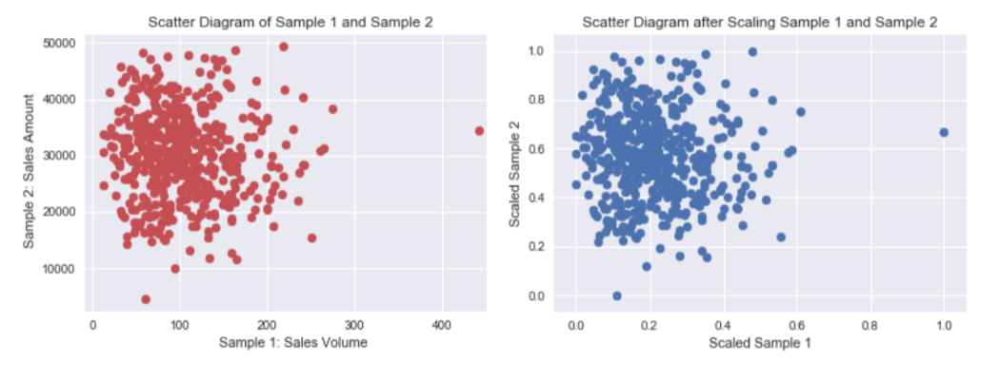
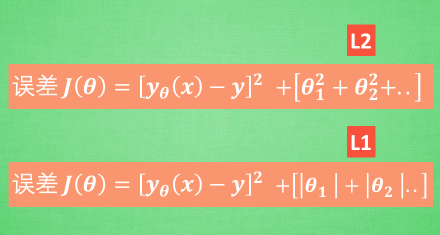
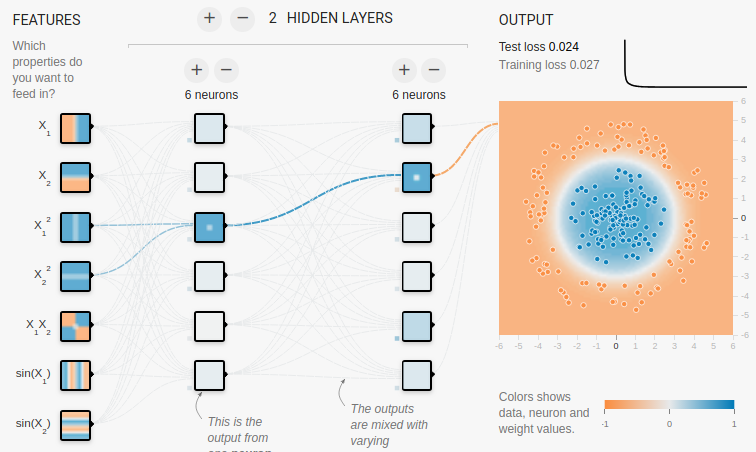
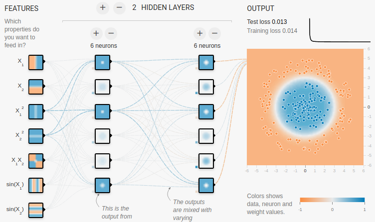
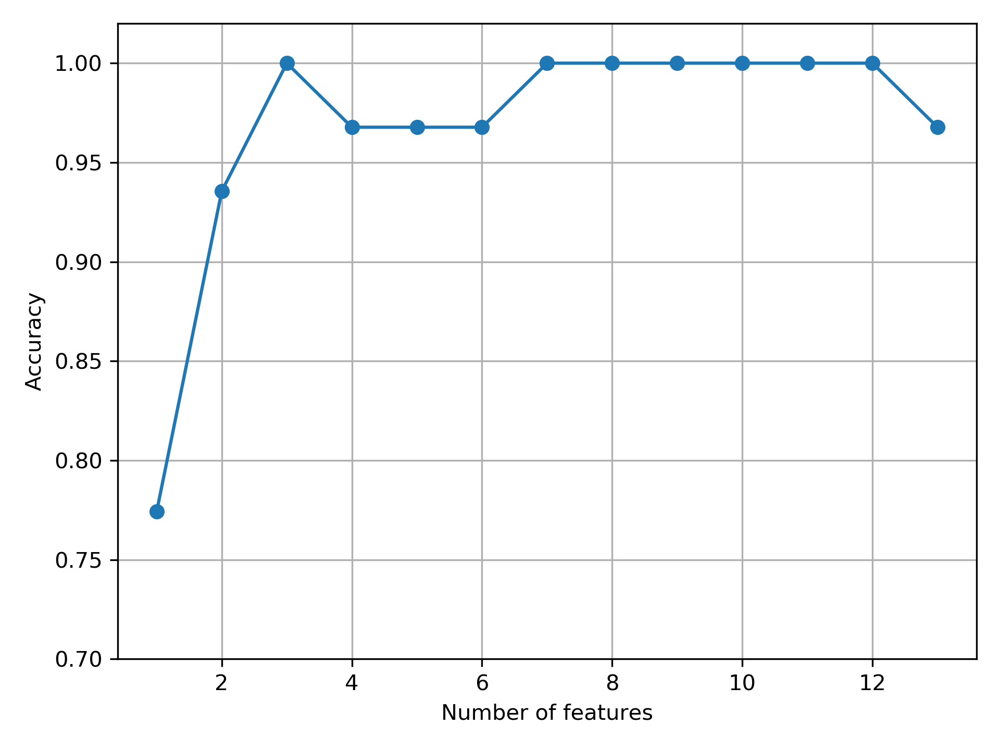
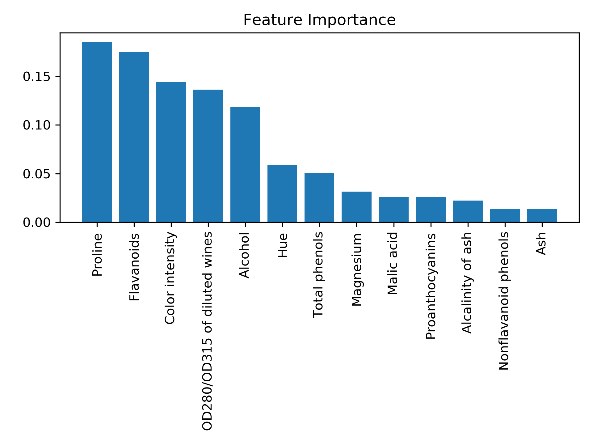

資料預處理(Data Pre-processing)
Table of Contents

進行數運模式運算之前，需要進行的數據預處理工作大致可分為以下幾點：
- 數據遺漏值處理
- 數據分類編碼
- 數據訓練集與測試集之分割
- 數據特徵選取
1. 驗證集 v.s. 測試集
- 訓練集（training): 舉例來說就是上課學習。主要用在訓練階段，用於模型擬合，直接參與了模型參數調整的過程1。
- 驗證集（validation）: 舉例來說就是模擬考，你會根據模擬考的成績繼續學習、或調整學習方式重新學習。在訓練過程中，用於評估模型的初步能力與超參數調整的依據。不過驗證集是非必需的，不像訓練集和測試集。如果不需要調整超參數，就可以不使用驗證集1。
- 測試集（test）就像是學測，用來評估你最終的學習結果。用來評估模型最終的泛化能力。為了能評估模型真正的能力，測試集不應該為參數調整、選擇特徵等依據1。
使用學測來比喻，是因為測試集不應該做為參數調整、選擇特徵等依據。這些選擇與調整可以想像成學習方式的調整，但學測已經考完，你不能時光倒轉回到最初調整學習方式1。
2. One Hot Encoding
將類別 (categorical)或是文字(text)的資料轉換成數字，而讓程式能夠更好的去理解及運算。理由:
- 字串無法套入數學模型進行運算
- 直接換成數字會造成誤解
2.1. pd.get_dummies
get_dummies 是利用pandas实现one hot encode的方式2。
1: import pandas as pd 2: df = pd.DataFrame([ 3: ['台中', '惠文高中'], 4: ['台中', '中女中'], 5: ['台南', '大灣高中'], 6: ['台南', '台南一中'], 7: ['高雄', '高雄女中'] 8: ]) 9: df.columns = ['city', 'school'] 10: print('---城市原值---') 11: print(df['city'].values) 12: print('---one hot encoding轉換---') 13: print(pd.get_dummies(df['city']))
---城市原值--- ['台中' '台中' '台南' '台南' '高雄'] ---one hot encoding轉換--- 台中 台南 高雄 0 1 0 0 1 1 0 0 2 0 1 0 3 0 1 0 4 0 0 1
3. Eronneous and Missing Data
現實世界中可能會因各種原因導致數據缺失或遺漏(如問卷被刻意留白)，這些部份通常會以「空白」、「NaN」或「NULL」來取代。
3.1. Erroneous data
- 何謂Erroneous data? 例Boston房價:房間坪數為負，或影像大小不一、影像色彩不一
- 如何處理錯誤資料: 刪除、變更(尺吋)
3.2. Missing data
- 為何會出現Missing data? 溫度記錄(data sensor固障)、遺忘、斷電
- 如何處理Missing data: 刪除、取代
3.3. 遺漏值的識別
1: csv_data = '''A,X,B,C,D 2: 1.0,,2.0,3.0,4.0 3: 5.0,,6.0,,8.0 4: 10.0,,11.0,12.0 5: ,,,,''' 6: import sys 7: import pandas as pd 8: # python 2.7需進行unicode轉碼 9: if (sys.version_info < (3, 0)): 10: csv_data = unicode(csv_data) 11: # 讀入程式檔中的csv資料 12: from io import StringIO 13: df = pd.read_csv(StringIO(csv_data)) 14: print(df) 15: # 列出每行有的null個數 16: print(df.isnull().sum()) 17: # access the underlying NumPy array 18: # via the `values` attribute 19: df.values 20: 21: # 剛除有遺失值的資料列 22: print('刪掉有遺失值的列:df.dropna(axis=1)') 23: print(df.dropna(axis=0)) 24: # 剛除有遺失值的資料行 25: print('刪掉有遺失值的行:df.dropna(axis=1)') 26: print(df.dropna(axis=1)) 27: # 剛除整列為NaN者 28: print('剛除整行為NaN者:df.dropna(how=\'all\')') 29: print(df.dropna(how='all') ) 30: # 刪除有值個數低於thresh的列 31: print('刪除有值個數低於thresh的列:df.dropna(thresh=4)') 32: print(df.dropna(thresh=4)) 33: # 刪除特定行(如第C行)中有NaN之列 34: print('刪除特定行(如第C行)中有NaN之列:df.dropna(subset=[\'C\'])') 35: print(df.dropna(subset=['C']))
A X B C D
0 1.0 NaN 2.0 3.0 4.0
1 5.0 NaN 6.0 NaN 8.0
2 10.0 NaN 11.0 12.0 NaN
3 NaN NaN NaN NaN NaN
A 1
X 4
B 1
C 2
D 2
dtype: int64
刪掉有遺失值的列:df.dropna(axis=1)
Empty DataFrame
Columns: [A, X, B, C, D]
Index: []
刪掉有遺失值的行:df.dropna(axis=1)
Empty DataFrame
Columns: []
Index: [0, 1, 2, 3]
剛除整行為NaN者:df.dropna(how='all')
A X B C D
0 1.0 NaN 2.0 3.0 4.0
1 5.0 NaN 6.0 NaN 8.0
2 10.0 NaN 11.0 12.0 NaN
刪除有值個數低於thresh的列:df.dropna(thresh=4)
A X B C D
0 1.0 NaN 2.0 3.0 4.0
刪除特定行(如第C行)中有NaN之列:df.dropna(subset=['C'])
A X B C D
0 1.0 NaN 2.0 3.0 4.0
2 10.0 NaN 11.0 12.0 NaN
雖然刪除包含遺漏值的數據似乎是個方便的方法，但終究可能會刪除過多的樣本，導致分析的結果並不可靠；或是因為刪除了特徵的時候，卻失去了重要的資訊。
4. 填補遺遺漏值
最常見的「插補技術」之一為「平均插補」(mean imputation)，即，以整個特徵行的平均值來代替遺漏值。
1: csv_data = '''A,X,B,C,D 2: 1.0,,2.0,3.0,4.0 3: 5.0,,6.0,,8.0 4: 10.0,,11.0,12.0 5: ,,,,''' 6: import sys 7: import pandas as pd 8: # python 2.7需進行unicode轉碼 9: if (sys.version_info < (3, 0)): 10: csv_data = unicode(csv_data) 11: # 讀入程式檔中的csv資料 12: from io import StringIO 13: df = pd.read_csv(StringIO(csv_data)) 14: 15: # impute missing values via the column mean 16: from sklearn.preprocessing import Imputer 17: # axis=0: 以行的平均值來補 18: # axis=1: 以列的平均值來補 19: # strategy的選項有: median(中位數)、most_freqent(最頻繁出現者) 20: # most_freqent在做為分類特徵時很有用 21: imr = Imputer(missing_values='NaN', strategy='mean', axis=0) 22: imr = imr.fit(df.values) 23: imputed_data = imr.transform(df.values) 24: print(df) 25: print(imputed_data)
A X B C D
0 1.0 NaN 2.0 3.0 4.0
1 5.0 NaN 6.0 NaN 8.0
2 10.0 NaN 11.0 12.0 NaN
3 NaN NaN NaN NaN NaN
[[ 1. 2. 3. 4. ]
[ 5. 6. 7.5 8. ]
[10. 11. 12. 6. ]
[ 5.33333333 6.33333333 7.5 6. ]]
Imputer 類別在 scikit-learn 中屬於 transformer 類別，主要的工作是做「數據轉換」，這些 estimator 有兩種基本方法：fit 與 transform，fit 方法是用來進行參數學習。
5. 處理數據中的分類特徵編碼問題
5.1. categorical feature
真實世界的數據集往往包含各種「類別特徵」(categorical feature)，類別特徵可再分為
- nominal feature: 名義特徵
- ordinal feature: 次序特徵
1: import pandas as pd 2: df = pd.DataFrame([['green', 'M', 10.1, 'class2'], 3: ['red', 'L', 13.5, 'class1'], 4: ['blue', 'XL', 15.3, 'class2']]) 5: 6: df.columns = ['color', 'size', 'price', 'classlabel'] 7: print(df)
color size price classlabel 0 green M 10.1 class2 1 red L 13.5 class1 2 blue XL 15.3 class2
5.2. 對應 ordinal feature
自定一個 mapping dictionary，即 size_mapping，然後將 classlabel 對應到 size_mapping 中的鍵值(程式第11行)。
1: import pandas as pd 2: df = pd.DataFrame([['green', 'M', 10.1, 'class2'], 3: ['red', 'L', 13.5, 'class1'], 4: ['blue', 'XL', 15.3, 'class2']]) 5: 6: df.columns = ['color', 'size', 'price', 'classlabel'] 7: ### Mapping ordinal features 8: size_mapping = {'XL': 3, 9: 'L': 2, 10: 'M': 1} 11: df['size'] = df['size'].map(size_mapping) 12: print(df)
color size price classlabel 0 green 1 10.1 class2 1 red 2 13.5 class1 2 blue 3 15.3 class2
5.3. 對應 nominal feature
許多機器學習的函式庫需要將「類別標籤」編碼為整數值。方法之一是以列舉方式為這些 nominal features 自 0 開始編號，先以 enumerate 方式建立一個 mapping dictionary: class_mapping(程式第10行)，然後利用這個字典將類別特徵轉換為整數值。
此外，也可以利用已產生的對應字典，藉由借調 key-value 來產生「反轉字典」(第18行)，將對調產生的整數還原回原始類別特徵。
scikit-learn 中有一個更為方便的 LabelEncoder 類別則可以直接完成上述工作(第25行)。
1: import pandas as pd 2: df = pd.DataFrame([['green', 'M', 10.1, 'class2'], 3: ['red', 'L', 13.5, 'class1'], 4: ['blue', 'XL', 15.3, 'class2']]) 5: 6: df.columns = ['color', 'size', 'price', 'classlabel'] 7: # 建利對應字典 8: import pandas as np 9: class_mapping = { 10: label: idx for idx, label in enumerate(np.unique(df['classlabel'])) 11: } 12: print(class_mapping) 13: # 將類別特徵轉換為整數值 14: df['classlabel'] = df['classlabel'].map(class_mapping) 15: print(df) 16: 17: # 產生反轉字典，將整數還原至原始的類別標籤 18: inv_class_mapping = {v: k for k, v in class_mapping.items()} 19: df['classlabel'] = df['classlabel'].map(inv_class_mapping) 20: print(df) 21: 22: # Label encoding with sklearn's LabelEncoder 23: from sklearn.preprocessing import LabelEncoder 24: class_le = LabelEncoder() 25: y = class_le.fit_transform(df['classlabel'].values) 26: print(y) 27: df['classlabel'] = y 28: print(df) # 類別與數字的對應不一定與自訂字典一致 29:
{'class2': 0, 'class1': 1}
color size price classlabel
0 green M 10.1 0
1 red L 13.5 1
2 blue XL 15.3 0
color size price classlabel
0 green M 10.1 class2
1 red L 13.5 class1
2 blue XL 15.3 class2
[1 0 1]
color size price classlabel
0 green M 10.1 1
1 red L 13.5 0
2 blue XL 15.3 1
5.4. 對 nominal feature 執行 one-hot encoding
scikit-learn 的 LabelENcoder 類別可以用來將「類別特徵」編碼為整數值，但這樣會引發另一個問題，如果我們將上述資料中的 color 特徵轉換為整數值，如下：
1: import pandas as pd 2: df = pd.DataFrame([['green', 'M', 10.1, 'class2'], 3: ['red', 'L', 13.5, 'class1'], 4: ['blue', 'XL', 15.3, 'class2']]) 5: 6: df.columns = ['color', 'size', 'price', 'classlabel'] 7: 8: X = df[['color', 'size', 'price', 'classlabel']].values 9: 10: # 以LabelEncoder轉換 11: from sklearn.preprocessing import LabelEncoder 12: color_le = LabelEncoder() 13: print(X[:,0]) 14: X[:,0] = color_le.fit_transform(X[:,0]) 15: print(X[:,0]) 16:
['green' 'red' 'blue'] [1 2 0]
由輸出結果可以發現，經過類別編碼後的顏色特徵，由原本不具次序的特徵變成存在大小關係(red>green>blue)，這明顯會影響 model 運算的結果。針對此一問題，常見的解決方案是 one-hot encoding，其原理是：對特徵值中的每個值，建立一個新的「虛擬特徵」(dummy feature)。方法有二：
- 利用 ColumnTransformer 函式庫的 ColumnTransformer 類別，將特徵值轉換 One-Hot Encoding 的對應矩陣，如程式第24行。
- 利用 Pandas 套件的 get_dummies 類別，一次將矩陣內指定之 column 轉換為 One-Hot encoding，如程式第28行。這種轉換只有字串數據會被轉換，其他內容則否。
1: import pandas as pd 2: df = pd.DataFrame([['green', 'M', 10.1, 'class2'], 3: ['red', 'L', 13.5, 'class1'], 4: ['blue', 'XL', 15.3, 'class2']]) 5: 6: df.columns = ['color', 'size', 'price', 'classlabel'] 7: 8: X = df[['color', 'size', 'price', 'classlabel']].values 9: print(df) 10: 11: # one-hot encoding: ColumnTransformer / fit_transform 12: from sklearn.preprocessing import LabelEncoder 13: from sklearn.preprocessing import OneHotEncoder 14: from sklearn.compose import ColumnTransformer 15: import numpy as np 16: 17: X = df[['color', 'size', 'price']].values 18: 19: ct = ColumnTransformer( 20: # The column numbers to be transformed (here is [0] but can be [0, 1, 3]) 21: # Leave the rest of the columns untouched 22: [('OneHot', OneHotEncoder(), [0])], remainder='passthrough' 23: ) 24: print(ct.fit_transform(X)) 25: 26: # on-hot encoding: pandas / get_dummies 27: import pandas as pd 28: print(pd.get_dummies(df[['price', 'color', 'size']]))
color size price classlabel 0 green M 10.1 class2 1 red L 13.5 class1 2 blue XL 15.3 class2 [[0.0 1.0 0.0 'M' 10.1] [0.0 0.0 1.0 'L' 13.5] [1.0 0.0 0.0 'XL' 15.3]] price color_blue color_green color_red size_L size_M size_XL 0 10.1 0 1 0 0 1 0 1 13.5 0 0 1 1 0 0 2 15.3 1 0 0 0 0 1
應用 one-hot encoding 時，我們必須留意它所引入的「多元共線性」(multicollinearity)問題，這在某些狀況下(如要計算反矩陣)可能會產生一些問題，若特徵間有高度相關，則會難以計算反矩陣，導致數值不穩定的舘計。
6. 訓練集與測試集的數據分割
1: # # Partitioning a dataset into a seperate training and test set 2: df_wine = pd.read_csv('https://archive.ics.uci.edu/' 3: 'ml/machine-learning-databases/wine/wine.data', 4: header=None) 5: 6: # if the Wine dataset is temporarily unavailable from the 7: # UCI machine learning repository, un-comment the following line 8: # of code to load the dataset from a local path: 9: 10: # df_wine = pd.read_csv('wine.data', header=None) 11: 12: 13: df_wine.columns = ['Class label', 'Alcohol', 'Malic acid', 'Ash', 14: 'Alcalinity of ash', 'Magnesium', 'Total phenols', 15: 'Flavanoids', 'Nonflavanoid phenols', 'Proanthocyanins', 16: 'Color intensity', 'Hue', 'OD280/OD315 of diluted wines', 17: 'Proline'] 18: 19: print('Class labels', np.unique(df_wine['Class label'])) 20: df_wine.head() 21: 22: X, y = df_wine.iloc[:, 1:].values, df_wine.iloc[:, 0].values 23: 24: X_train, X_test, y_train, y_test = train_test_split(X, y, 25: test_size=0.3, 26: random_state=0, 27: stratify=y) 28:
7. 縮放特徵值、維持特徵值影響比例：正規化(normalization)
當我們在比較分析兩組數據資料時，可能會遭遇因單位的不同(例如：身高與體重)，或數字大小的代表性不同(例如：粉專1萬人與滿足感0.8)，造成各自變化的程度不一，進而影響統計分析的結果；為解決此類的問題，我們可利用資料的正規化(Normalization
)與標準化(Standardization)，藉由將原始資料轉換成無量綱(Dimensionless)的純量後，來進行數據的比較及分析3。
7.1. Normalization
資料的正規化(Normalization)是將原始資料的數據按比例縮放於 [0, 1] 區間中，且不改變其原本分佈。舉例來說，若我們現有兩組數據資料，分別表示 500 項商品的銷售量 Sample 1 及銷售額 Sample 2，如下圖所示，很明顯地，此兩組資料的單位不同，且數字上有著懸殊的差異，分別透過資料正規化後，兩組資料將同時轉換成純量縮放於 [0,1] 區間中，如下右圖所示；這樣的資料轉換，能排除資料單位的限制，提供我們一個相同的基準來進行後續比較分析。

Figure 1: Caption
7.2. Standardization
資料的標準化(Standardization)可運用在機器學習演算法中，它能帶給模型下面兩個好處：
- 提升模型的收斂速度
在建構機器學習模型時，我們會利用梯度下降法(Gradient Descent)來計算成本函數(Cost Function)的最佳解；假設我們現有兩個特徵值 x1 in [0,1] 與 x2 in [0,10000]，則在 x1-x2 平面上成本函數的等高線會呈窄長型，導致需較多的迭代步驟，另外也可能導致無法收斂的情況發生。因此，若將資料標準化，則能減少梯度下降法的收斂時間。
- 提高模型的精準度
將特徵值 x1 及 x2 餵入一些需計算樣本彼此的距離(例如:歐氏距離)分類器演算法中，則 x2 的影響很可能將遠大於 x1，若實際上 x1 的指標意義及重要性高於 x2，這將導致我們分析的結果失真。因此，資料的標準化是有必要的，可讓每個特徵值對結果做出相近程度的貢獻。
- 常見的標準化及正規化方法
- Z分數標準化(Z-Score Standardization)
\[ Z=\frac{X-\mu}{\delta}\sim N(0,1)\]
- 最小值最大值正規化(Min-Max Normalization)
\[ X_{nom} = \frac{X-X_{min}}{X_{max}-X_{min}} \in [0,1] \]
「特徵縮放」(Feature scaling)是資料預處理的一個關鍵，「決策樹」和「隨機森林」是極少數無需進行 feature scaling 的分類技術；對多數機器學習演算法而言，若特徵值經過適當的縮放，都能有更佳成效。
Feature scaling 的重要性可以以下例子看出，假設有兩個特徵值(a, b)，其中 a 的測量範圍為 1 到 10，b 的測量值範圍為 1 到 100000，以典型分類演算法的做法，一定是忙於最佳化特徵值 b；若以 KNN 的演算法，也會被特徵值 b 所技配。
正規化有兩種常用的方法，可以將不同規模的特徵轉化為相同的規模：常態化(normalization)和標準化(standardization)：
- Z分數標準化(Z-Score Standardization)
7.3. 常態化
將特徵值縮化為 0~1 間，這是「最小最大縮放」(min-max scaling)的一個特例，某一特徵值的常態化做法如下：
\[x_{norm}^i = \frac{x^i-x_{min}}{x_{max}-x_{min}}\]
若以 scikit-learn 套件來完成實作，其程式碼如下：
1: from sklearn.preprocessing import MinMaxScaler 2: mms = MinMaxScaler() 3: X_train_norm = mms.fit_transform(X_train) 4: X_test_norm = mms.fit_transform(X_test)
7.4. 標準化
雖說常態化簡單實用，但對許多機器學習演算法來說(特別是梯度下降法的最佳化)，標準化則更為實際，我們可令標準化後的特徵值其平均數為 0、標準差為 1，這樣一來，特徵值會滿足常態分佈，進而使演算法對於離群值不那麼敏感。標準化的公式如下：
\[x_{std}^i = \frac{x^i-\mu_x}{\sigma_x}\]
若以 scikit-learn 套件來完成實作，其程式碼如下：
1: from sklearn.preprocessing import StandardScaler 2: stdsc = StandardScaler() 3: X_train_std = stdsc.fit_transform(X_train) 4: X_test_std = stdsc.transform(X_test)
8. 選取有意義的特徵
overfitting 的產生原因是模型過度遷就於訓練數據，導致面對新數據(測試集)時成效不彰，我們稱這種模型具有較高變異性(high variance)，一般的解決策略有：
- 收集更多的訓練數據集
- 經由正規化，對於過度複雜的模型引進一個「懲罰」(penalty)
- 以較少的參數做出較簡單的模型(使用更簡單的模型)
- 減少數據維度
8.1. L1L2 regularzation
一個典型的解釋4如圖2，“我們知道, 過擬合就是所謂的模型對可見的數據過度自信, 非常完美的擬合上了這些數據, 如果具備過擬合的能力, 那麼這個方程就可能是一個比較複雜的非線性方程 , 正是因為這裡的 x^3 和 x^2 使得這條虛線能夠被彎來彎去, 所以整個模型就會特別努力地去學習作用在 x^3 和 x^2 上的 c, d 參數. 但是我們期望模型要學到的卻是 這條藍色的曲線. 因為它能更有效地概括數據.而且只需要一個 y=a+bx 就能表達出數據的規律. 或者是說, 藍色的線最開始時, 和紅色線同樣也有 c d 兩個參數, 可是最終學出來時, c 和 d 都學成了 0, 雖然藍色方程的誤差要比紅色大, 但是概括起數據來還是藍色好. 那我們如何保證能學出來這樣的參數呢? 這就是 l1 l2 正規化出現的原因啦.”

Figure 2: 過擬合問題
對於上述訓練出的兩個方程式，我們可以用\((y_{\theta}(x)-y)^2\)來計算模型預測值\(y(x)\)和真實數據\(y\)的誤差，而 L1, L2 就只是在這個誤差公式後加上一些式子來修正這個公式(如圖3)，其目的在於讓誤差的最佳化不僅取決於訓練數據擬合的優劣，同時也取決於參數值(如 c,d)的大小；L2 正規化以參數平方來做為計算方式，L1 正規化則是計算每個參數的絕對值。

Figure 3: L1,L2 正規化公式
進一步以 Tensorflow Playground 的圖示來觀察 L1,L2 正規化的差異5，如果把正規化(Regularization)設定為 L1，再執行訓練。可以看到很多權重都被設定為 0，特徵輸入與隱藏層的神經元被大大的減少，如圖4，整個模型的複雜度簡化很多。L1 正規化確實有助於將我們的複雜模型縮減為更小的泛化模型。添加正規化後，我們看到無用的功能全部變為零，並且連接線變得稀疏並顯示為灰色。倖存下來的唯一特徵是 x_1 平方和 x_2 平方，這是有道理的，因為這 2 個特徵加在一起就構成了一個圓的方程。

Figure 4: L1 正規化
反觀 L2 正規化，當我們訓練它時，每個權重與神經元都還是處於活動狀態，但是非常虛弱，如圖5，L1 正規化使用其中一個特徵而將某些拋棄，而 L2 正規化將同時保留特徵並使權重值保持較小。因此，使用 L1，您可以得到一個較小的模型，但預測性可能較低。。所以：
- L1 正規化：有可能導致零權重，因刪除更多特徵而使模型稀疏。
- L2 正規化：會對更大的權重值造成更大的影響，將使權重值保持較小。

Figure 5: L2 正規化
9. 資料擴增/資料增強(Data Augmentation)
10. 循序特徵選擇法
另一種降低模型複雜度以避免過度擬合的方式是經由「特徵選擇」(feature selection)來做「降維」(dimensionality reduction)，降維的做法有二：
- 特徵選擇：feature selection, 由原本的特徵中，選出一個子集合
- 特徵提取：feature extraction，由原本的特徵中，導出資訊來建構新的特徵
循序特徵選擇法(sequential feature selection)為貪婪演算法的一種，目標在移除不相關或相關較低的特徵，以提高計算效率，這對於不支援「正規化」的演算法來說是很有用的。「循序向後選擇」(Sequential Backward Selection, SBS)便是一個典型的循序特徵選擇法，其做法是逐一從特徵空間中移除特徵，直到只剩下所要的特徵個數。為了達到這個目的，我們要定義一個最小化的「準則函數」(criterion function), 這個準則可以簡化為「模型在移除某特徵前/後的效能差異。SBS 的 python 實作如下：
1: # ## Sequential feature selection algorithms 2: from sklearn.base import clone 3: from sklearn.metrics import accuracy_score 4: from itertools import combinations 5: class SBS(): 6: def __init__(self, estimator, k_features, scoring=accuracy_score, 7: test_size=0.25, random_state=1): 8: self.scoring = scoring 9: self.estimator = clone(estimator) 10: self.k_features = k_features 11: self.test_size = test_size 12: self.random_state = random_state 13: 14: def fit(self, X, y): 15: 16: X_train, X_test, y_train, y_test = train_test_split(X, y, test_size=self.test_size, 17: random_state=self.random_state) 18: 19: dim = X_train.shape[1] 20: self.indices_ = tuple(range(dim)) 21: self.subsets_ = [self.indices_] 22: score = self._calc_score(X_train, y_train, 23: X_test, y_test, self.indices_) 24: self.scores_ = [score] 25: 26: while dim > self.k_features: 27: scores = [] 28: subsets = [] 29: 30: for p in combinations(self.indices_, r=dim - 1): 31: score = self._calc_score(X_train, y_train, 32: X_test, y_test, p) 33: scores.append(score) 34: subsets.append(p) 35: 36: best = np.argmax(scores) 37: self.indices_ = subsets[best] 38: self.subsets_.append(self.indices_) 39: dim -= 1 40: 41: self.scores_.append(scores[best]) 42: self.k_score_ = self.scores_[-1] 43: 44: return self 45: 46: def transform(self, X): 47: return X[:, self.indices_] 48: 49: def _calc_score(self, X_train, y_train, X_test, y_test, indices): 50: self.estimator.fit(X_train[:, indices], y_train) 51: y_pred = self.estimator.predict(X_test[:, indices]) 52: score = self.scoring(y_test, y_pred) 53: return score 54: 55: import matplotlib.pyplot as plt 56: from sklearn.neighbors import KNeighborsClassifier 57: 58: knn = KNeighborsClassifier(n_neighbors=5) 59: 60: ##======== 61: # 讀入資料 62: from sklearn import datasets 63: import numpy as np 64: import pandas as pd 65: df_wine = pd.read_csv('https://archive.ics.uci.edu/' 66: 'ml/machine-learning-databases/wine/wine.data', 67: header=None) 68: df_wine.columns = ['Class label', 'Alcohol', 'Malic acid', 'Ash', 69: 'Alcalinity of ash', 'Magnesium', 'Total phenols', 70: 'Flavanoids', 'Nonflavanoid phenols', 'Proanthocyanins', 71: 'Color intensity', 'Hue', 'OD280/OD315 of diluted wines', 72: 'Proline'] 73: X, y = df_wine.iloc[:, 1:].values, df_wine.iloc[:, 0].values 74: from sklearn.model_selection import train_test_split 75: X_train, X_test, y_train, y_test = train_test_split(X, y, 76: test_size=0.3, 77: random_state=0, 78: stratify=y) 79: 80: # 將資料標準化: 利用preprocessing模組裡的StandardScaler類別 81: from sklearn.preprocessing import StandardScaler 82: sc = StandardScaler() # 實例化一個StandardScaler物件 83: # 利用fit方法，對X_train中每個特徵值估平均數和標準差 84: # 然後對每個特徵值進行標準化(train和test都要做) 85: sc.fit(X_train) 86: X_train_std = sc.transform(X_train) 87: X_test_std = sc.transform(X_test) 88: 89: ##=== 90: 91: # selecting features 92: sbs = SBS(knn, k_features=1) 93: sbs.fit(X_train_std, y_train) 94: 95: # plotting performance of feature subsets 96: k_feat = [len(k) for k in sbs.subsets_] 97: 98: plt.plot(k_feat, sbs.scores_, marker='o') 99: plt.ylim([0.7, 1.02]) 100: plt.ylabel('Accuracy') 101: plt.xlabel('Number of features') 102: plt.grid() 103: plt.tight_layout() 104: plt.savefig('04_08.png', dpi=300) 105: #plt.show() 106: print(sbs.subsets_) # 全部列出，找到3個特徵值是在第幾個位置 107: print(list(sbs.subsets_[10])) 108: k3 = list(sbs.subsets_[10]) 109: print(df_wine.columns[1:][k3]) 110: ## 比較全部特徵值與三個特徵值的效能 111: knn.fit(X_train_std, y_train) 112: print('Training accuracy (FULL):', knn.score(X_train_std, y_train)) 113: print('Test accuracy (FULL):', knn.score(X_test_std, y_test)) 114: knn.fit(X_train_std[:, k3], y_train) 115: print('Training accuracy (K3):', knn.score(X_train_std[:,k3], y_train)) 116: print('Test accuracy (K3):', knn.score(X_test_std[:,k3], y_test)) 117:
[(0, 1, 2, 3, 4, 5, 6, 7, 8, 9, 10, 11, 12), (0, 1, 2, 3, 4, 5, 6, 7, 9, 10, 11, 12), (0, 1, 2, 3, 4, 5, 6, 7, 9, 10, 11), (0, 1, 2, 3, 4, 5, 6, 7, 9, 11), (0, 1, 2, 3, 4, 5, 7, 9, 11), (0, 1, 2, 3, 5, 7, 9, 11), (0, 1, 2, 3, 5, 7, 11), (0, 1, 2, 3, 5, 11), (0, 1, 2, 3, 11), (0, 1, 2, 11), (0, 1, 11), (0, 11), (0,)] [0, 1, 11] Index(['Alcohol', 'Malic acid', 'OD280/OD315 of diluted wines'], dtype='object') Training accuracy (FULL): 0.967741935483871 Test accuracy (FULL): 0.9629629629629629 Training accuracy (K3): 0.9516129032258065 Test accuracy (K3): 0.9259259259259259

Figure 6: SBS
前述實作中，k_features 參數(程式第92行)定義了我們希望演算法「最後要保留多少特徵」，在預設情況下，以 accuracy_score(程式第98行)來評估模型效能。在 fit 的 while 迴圈中(26行)，由 itertools 模組的 combinations 方法所產生的特徵子集合會被評估並降維，直到只剩下所要的特徵個數。
在每次迭代中，演算法使用內部創建的測試數據集 X_test(第32行)來評估特徵子集合，然後留下精確度最佳的特徵子集合所得分數，加入串列 self.scores_中(第41行)，之後再以這些分數來評估結果。最後的特徵子集合「行索引」會被分派到變數 self.indices_中，然後以 transform 將這些所選定的特徵轉為新的數據陣列。
由圖6可以看到，當特徵數 k={3, 7, 8, 9, 10, 11, 12}時，KNN 分類器的準確率為 100%。若進一步想確定當 k=3 時，是哪三個特徵，則可以由 sbs.subset_中逐步探索出來(程式第106行)。
進一步比較「全部特徵值」以及「三個特徵值」所得出的模型效能，可以看到即使只留下三個特徵值，模型的效能仍相去不遠，更重要的是，透過降低維度，可以有效的提升運算效能。
11. 以隨機森林評估特徵的重要性
隨機森林顧名思義，是用隨機的方式建立一個森林，森林裡面有很多的決策樹組成，隨機森林的每一棵決策樹之間是沒有關聯的。在得到森林之後，當有一個新的輸入樣本進入的時候，就讓森林中的每一棵決策樹分別進行一下判斷，看看這個樣本應該屬於哪一類（對於分類演算法），然後看看哪一類被選擇最多，就預測這個樣本為那一類6。上述 SBS 演算法係將低相關的特徵刪除、留下重要的特徵；而隨機森林則是利用許多決策樹來票選最後的決定。
1: from sklearn import datasets 2: import pandas as pd 3: import numpy as np 4: import matplotlib.pyplot as plt 5: 6: df_wine = pd.read_csv('https://archive.ics.uci.edu/' 7: 'ml/machine-learning-databases/wine/wine.data', 8: header=None) 9: df_wine.columns = ['Class label', 'Alcohol', 'Malic acid', 'Ash', 10: 'Alcalinity of ash', 'Magnesium', 'Total phenols', 11: 'Flavanoids', 'Nonflavanoid phenols', 'Proanthocyanins', 12: 'Color intensity', 'Hue', 'OD280/OD315 of diluted wines', 13: 'Proline'] 14: X, y = df_wine.iloc[:, 1:].values, df_wine.iloc[:, 0].values 15: from sklearn.model_selection import train_test_split 16: X_train, X_test, y_train, y_test = train_test_split(X, y, test_size=0.3, 17: random_state=0, 18: stratify=y) 19: 20: 21: from sklearn.ensemble import RandomForestClassifier 22: feat_labels = df_wine.columns[1:] 23: forest = RandomForestClassifier(n_estimators=500, 24: random_state=1) 25: 26: forest.fit(X_train, y_train) 27: importances = forest.feature_importances_ 28: 29: indices = np.argsort(importances)[::-1] 30: 31: for f in range(X_train.shape[1]): 32: print("%2d) %-*s %f" % (f + 1, 30, 33: feat_labels[indices[f]], 34: importances[indices[f]])) 35: 36: plt.title('Feature Importance') 37: plt.bar(range(X_train.shape[1]), 38: importances[indices], 39: align='center') 40: 1 41: plt.xticks(range(X_train.shape[1]), 42: feat_labels[indices], rotation=90) 43: plt.xlim([-1, X_train.shape[1]]) 44: plt.tight_layout() 45: plt.savefig('04_09.png', dpi=300) 46: #plt.show() 47:
1) Proline 0.185453 2) Flavanoids 0.174751 3) Color intensity 0.143920 4) OD280/OD315 of diluted wines 0.136162 5) Alcohol 0.118529 6) Hue 0.058739 7) Total phenols 0.050872 8) Magnesium 0.031357 9) Malic acid 0.025648 10) Proanthocyanins 0.025570 11) Alcalinity of ash 0.022366 12) Nonflavanoid phenols 0.013354 13) Ash 0.013279

Figure 7: FandomForest
由圖7的特徵排序為從 500 棵「決策樹」的「不純度」中最具「判別性」的特徵排列順序，